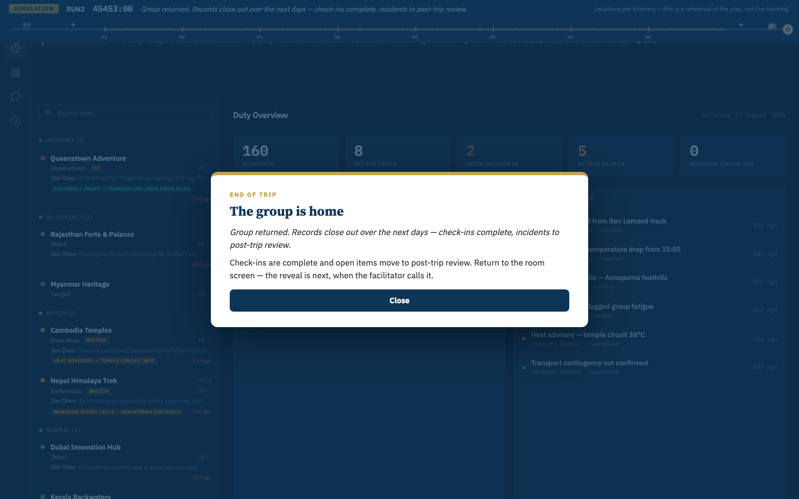
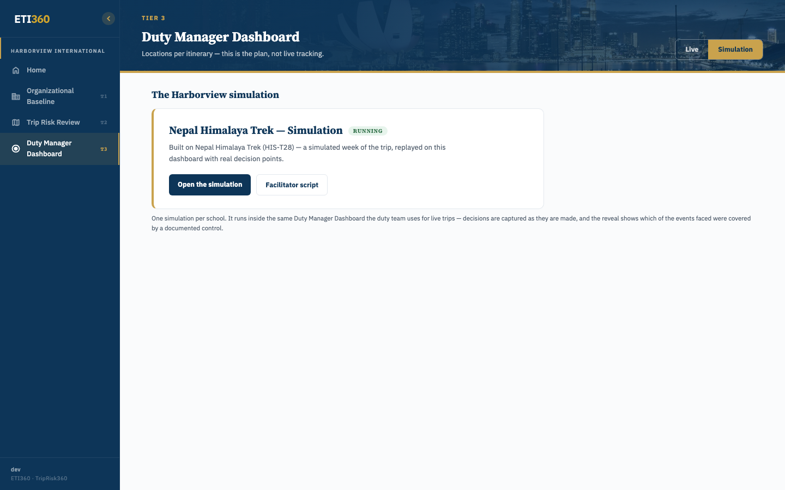

The Duty Manager Simulation is a facilitated 90-minute session in which your duty team runs one of your own trips inside the Duty Manager Dashboard — the same screen used for live trips. The scenario is built from the trip's actual file: the real itinerary, the real places, the real documents. For ninety minutes, the room runs the trip; then the trip stops going to plan, and every call and action is recorded as it is made.
Why schools run it: the session puts a developing situation in front of your duty manager before a real one does. The session shows — concretely, on your own trip — what your documents answer, where your team reaches for memory instead, and how your plan holds when the day stops cooperating — with no group in the field.
What it is not: not a test of people, and not scored. As the facilitator says at the top of every session — the record is about the plan, not the person. Nothing happens in the scenario that couldn't happen on the itinerary you're actually running.
- Format: 90 minutes, facilitated live by ETI360, remote or on-site
- Who takes part: your duty manager (the player); observers welcome — many schools bring the trip leader and a senior leader
- What you leave with: the After-Action Report (section 9)

What ETI360 prepares
- The scenario, built from the trip you choose — matched to its actual activities and exposures; a trek gets trek situations, a city program gets city ones
- The simulation staged on the dashboard, ready to run
What you arrange
- Which trip to rehearse — an upcoming one lets the findings be reviewed before travel
- A quiet room, a laptop, a phone, and 90 uninterrupted minutes
- The trip's documents in front of the player — the itinerary report, your completed RAMS, the communication sheet. The session's first act asks the room to answer from the documents, not from memory; that only works if they're on the table
Orientation (≈10 min)
The facilitator sets the frame: your trip, your students' numbers, where the group is today. Consent, roles, and the one rule — answer from the documents in front of you, not your memory of them.
Familiarization (≈15 min)
The trip, played clean. Check-ins arrive; the day unfolds as the itinerary says. Checkpoints test the plan, not the person: nearest definitive care from this afternoon's location? who's the school-side duty manager on the communication sheet? Right or wrong, the session moves on — the debrief owns the answers.
The trip stops going to plan — twice (≈40 min)
Two situations develop, the way situations really do: partial information, by phone and message, with the clock running. The duty manager works the situation, communicates, and records what is done; the session captures the information presented and the actions entered, as they happen.
Debrief and coverage reveal (≈25 min)
The timeline replayed together — what was known when, what was done, what the documents said. Then the reveal: which of the events the room just faced were covered by a documented control, and which were handled on judgment alone (section 8).

| Term | Definition |
|---|---|
| Session | One facilitated 90-minute simulation |
| Scenario | The situations rehearsed — built from your trip's actual file, never reused between schools |
| Facilitator | The ETI360 lead running the session and voicing everyone who calls in |
| Checkpoint | A question during familiarization answered from the trip's documents |
| Session timeline | The timestamped sequence of information, communications, and recorded actions — the raw material of the report |
| Coverage reveal | The debrief's closing move: which events were covered by a documented control, which weren't |
| After-Action Report | The compiled record of the session: timeline, checkpoint responses, documented coverage, and observations |
The screen is the Duty Manager Dashboard in the layout your team uses live — the same lanes, the same trip view, the same declare form. Two things tell you it's a session: the SIM badge in the top bar, and the Exit Sim control beside it. Live trips are untouched; the session's feed comes from the scenario.


Everything the player does in-session — reading lanes, recording check-ins, working flags, declaring — is exactly the Duty Manager Dashboard guide. This is the point: the session rehearses the real tool, so nothing learned needs translating afterward.
There is no script for the player. The situation develops; the duty manager works it the way they'd work a live one — read what's arriving, decide against the documents, communicate, log. Declaring an incident, choosing its severity, escalating to the school contact: all real moves on the real form, and each is captured with the player's stated reasoning at that moment.
The one rule that changes behavior: answer from the documents. When the room wants to know the nearest hospital to this afternoon's location, the answer is in the trip file on the table — reaching for it under mild pressure is what the session exercises.
Wrong turns are part of it. The facilitator won't correct in the moment — an action taken on a wrong assumption plays out, is recorded, and is reviewed in the debrief.
- The facilitator voices everyone on the other end — the trip leader in the field, the provider, a parent. Calls arrive on a real phone; messages arrive on the dashboard, as on a live trip.
- Information comes the way it really comes: partial, sequential, occasionally contradictory. Part of the exercise is deciding what you know versus what you've assumed.
- Fairness rule: the scenario never manufactures information the real trip couldn't produce. If the itinerary has no kayaks, nobody capsizes.
The debrief walks the session timeline back, together: what was known at each point, what was done, what the documents said — including the checkpoint answers from familiarization, which get their corrections here rather than mid-session.
Then the coverage reveal: of the events the room just faced, which were covered by a documented control in your file, and which were handled on judgment alone. Both halves matter — covered events show the plan working; uncovered ones identify exactly where the file is thinner than the trip. What to do about them is your school's call; the report records them as findings, not as an action plan.
The tone commitment, stated plainly: observations attach to the plan and the information flow, never grades to the person. A duty manager who made a reasonable call on the information they had made a reasonable call — even when the outcome went sideways.
After the session you receive the After-Action Report: the scenario as run, the session timeline as recorded, the checkpoint answers, the coverage reveal, and the observations from the debrief. It's compiled from the session's own record — nothing is reconstructed from memory.
It's addressed to your leadership: evidence that the team rehearsed this trip, on this date, and what the rehearsal showed about the plan. Delivery: PDF, plus a copy filed with the trip in your portal's documents.
images/06_aar.png — awaits a completed session's report (ASSET-REGISTER.md)- Each session is configured for the trip selected, so a later session covers different ground.
- A later session can use a different trip, a different duty manager, or a different scenario.
- To book: danskimin@eti360.com — name the trip and the dates that suit; we prepare the rest.
- "Will my duty manager be judged?" No scoring exists. The record reads on the plan; the facilitator says so out loud at the start, and the report holds to it.
- "Can it touch our real trips?" No — the session runs behind the SIM badge on scenario data; live trips are untouched.
- "What if we've never used the dashboard?" The orientation covers the essentials, and the Dashboard guide is a good hour's read beforehand — but arriving cold is a legitimate way to run it. What the session shows is your team as it is.
- "Why is it recorded?" The After-Action Report is compiled from the session's own record. Consent is asked on-screen before anything starts.
danskimin@eti360.com
- Session arc, checkpoint discipline, recording consent, and the coverage reveal are grounded in the live Nepal Himalaya Trek session's facilitator script — the guide deliberately does NOT screenshot or quote the script itself (it carries scenario answer keys).
- In-session shots (declare, incident log, debrief timeline) and the AAR spread await a staged session run — ASSET-REGISTER.md.
- Label cleanup queued: the facilitator script page title still says "Desktop Exercise" (retired term) — internal surface, TASKS.md.
- Illustrations:
illo_session_arc,illo_session_overview. - Tone review — Dan is running it.